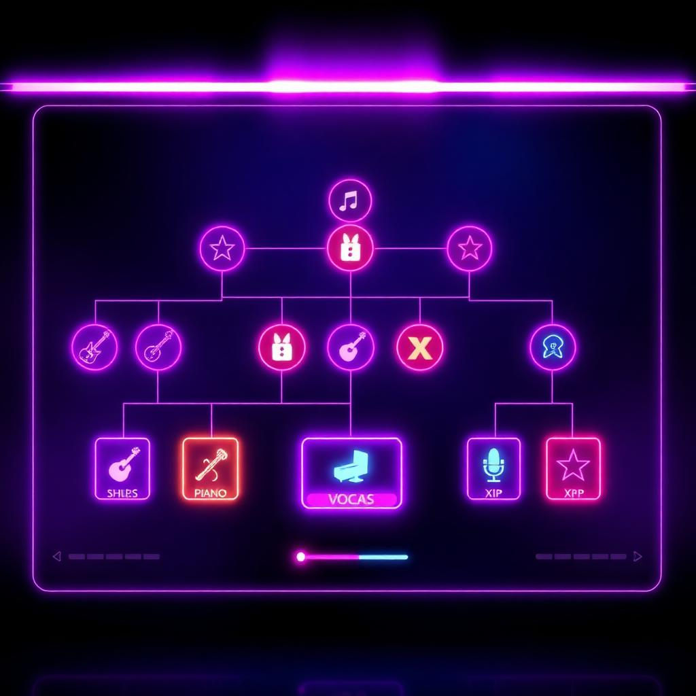

Mechanics explainer
Understanding Song Quality
Song quality is the result of a writing project developing over time. Music and lyrics need to be completed, while arrangement, polish, consistency, creative choices, genre knowledge and the people involved can shape how much of the song's potential becomes real.

The short version
Develop both the music and lyrics, write within—or deliberately challenge—your strengths, use collaborators where they genuinely add something, and spend refinement time on songs worth refining. High skill increases capability but does not make every song identical.
Completion comes first
A songwriting project has work to finish. Music and lyrics progress toward completion before the project can become a finished song. Other development dimensions can improve along the way, but an incomplete project is still incomplete no matter how promising the idea looks.
- Start the concept. Genre and project choices give the song a direction.
- Develop music and lyrics. Core progress turns the idea into a complete piece.
- Build arrangement and consistency. The parts need to function together, not only exist separately.
- Refine and polish. Additional work can realise more of the song's potential, with diminishing value rather than infinite improvement.
- Finish the song. The realised songwriting quality becomes part of the material used by later systems.
Potential and final quality are different ideas
A project can have a strong theoretical ceiling but fail to realise all of it. Conversely, a modest concept can be executed consistently and become a very usable song.
Craft
Relevant songwriting ability and supporting attributes shape what the writer can reliably create.
Genre knowledge
Understanding the style helps writers make choices that fit the musical language they are using.
Project choices
Structure and creative direction can trade reliability for ambition or originality.
Collaboration
Co-writers can add complementary capability and creative input when the collaboration makes sense.
Quality has dimensions
The game can track more than a single headline value. Music, lyrics, arrangement, polish, consistency, insight and originality help explain why two songs with similar overall quality may still feel like different creative achievements.
| Dimension | Player-facing meaning |
|---|---|
| Music | The strength of the musical composition. |
| Lyrics | The strength of the lyrical writing. |
| Arrangement | How effectively the parts and structure work together. |
| Consistency | How reliably the project turns effort into usable progress. |
| Polish | Refinement beyond simply reaching completion. |
| Originality | Creative distinctiveness, which can come with greater uncertainty. |
Safe choices and ambitious choices
Creative risk is not automatically good or bad. More experimental structures or choices can increase originality and widen the range of possible outcomes, while safer work can be more predictable. The right choice depends on the writer and what the song is for.
Skills raise capability, not certainty

Strong songwriting and genre skills are valuable because they improve the foundation and help realise better work more consistently. They are not a guarantee that every completed song will receive the same result.
Song quality is not recording quality
The written song is the source material. A later recording session creates a master using performers, studio capture, production and preparation. This distinction matters: an excellent song can receive a weak recording, and excellent production cannot turn weak source material into a different composition.
How to improve your catalogue
- Develop the songwriting and genre skills relevant to the music you actually create.
- Finish enough songs to learn what your character does consistently well.
- Use collaboration to complement weaknesses rather than merely add names to credits.
- Polish promising songs instead of endlessly refining every draft.
- Separate the decision to write a song from the later decision to spend money recording it.
- Judge songs by their role in a repertoire or release, not only by one number.